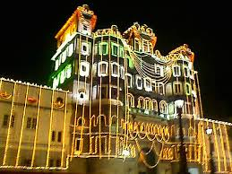

About Rajwada Palace
Rajwada Palace stands as a symbol of the rich cultural heritage and architectural brilliance of the Holkar dynasty. Built in the 18th century, this majestic palace served as the residence of the Holkar rulers. The architectural style of Rajwada Palace is a fascinating blend of Maratha, Mughal, and French influences, characterized by its grandeur and elegance. The palace complex comprises several courtyards, galleries, and chambers, each reflecting the opulence and splendor of the bygone era. Despite facing destruction during historical conflicts, Rajwada Palace has been restored and preserved, attracting visitors with its captivating beauty and historical significance.